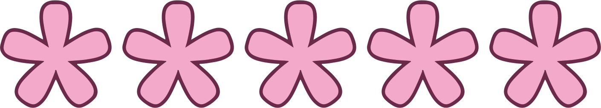
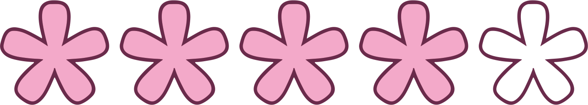
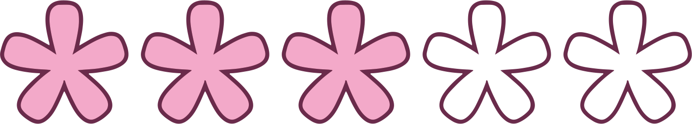

谷平 結菜
Tanihira Yuna
2003.1.21 生まれ
共立女子大学 家政学部
建築・デザイン学科 デザインコース
TEL：012-345-6789
Mail：21d411@kyoritsu-wu.ac.jp
はじめまして、谷平 結菜です。
小さい頃からずっと絵を描くことが大好きです。自分の好きなことで人の役に立ちたいと思い、今は共立女子大学でデザインの勉強中です。当たり前のことですが、自分の個性も大切にしつつ、客観的に見てどうしてこのデザインなのかを考えながらクオリティの高いものを制作するように頑張っています。
興味・ワクワク
デザインする上で見た人が興味を持つか、ワクワクするかということはとても大切だと思っています。人はやはり視覚からの情報が多いです。いくら良いものでも、外観が良くなければ興味を持ちません。私自身も最初の雰囲気で手に取ることが多いです。「パッと見た瞬間、興味を持って知ってもらえるきっかけになるデザイン」を常に意識しながらデザインを考えています。
自分らしさと客観的視点
自分の個性と客観的な視点のバランスを考えることも大切だと感じています。自分が好きだと思うものやいいなと思うものは大切にしていきたいです。ただ、そればかりになるとデザインではなくなってしまいます。他の人が見たらどう思うかも考えて修正しながら、私ができる私にしかできない最大のデザインを作ることを心がけています。
意味のあるデザイン
なぜこのデザインにしたのか、理由を説明できるようにすることを大切にしています。大学で勉強するまでは、かわいい・綺麗という理由で絵を描いていましたが、デザインを学んでからしっかりと考えるようになりました。デザインをする前にきちんと調べて資料を集めています。たくさんのアイデアを出すことを必ず行い、心に残るデザインを作れるように励んでいます。
Illustrator
Photoshop
Indesign
Aftereffect
Dreamweaver
HTML
Rhinoceros
CSS
その他 … Clip studio paint
文部科学省後援 色彩検定3 級 合格
-
2021.3
神奈川県立横須賀大津高等学校 卒業
-
2021.4 - 現在
共立女子大学 家政学部 建築・デザイン学科
デザインコース 入学、在学中 -
2023.4 -
田中ゼミに所属
タイポグラフィ（書体デザイン）を学び、金魚をモチーフにしたkingyomai（金魚舞）フォントを作る
福井活性化計画
-
2022.3−現在
ジルミナ株式会社
デザイナー長期インターンシップバナーやLP、WEBサイト制作を中心に行いWEBデザイナーとしての実務経験を積んでいます
-
2022.4−8
スタジオ・エーワン株式会社
パッケージデザイナー長期インターンシップパッケージのデザインを中心に行う
-
2023.9−２週間
株式会社スマートチェックアウト
インハウスデザイナー長期インターンシップ夏に自社サービスのデザインを経験
-
2023.9−3日間
サイバーエージェント
デザイナーインターンシップ -
2023.11−2日間
博報堂アイスタジオ
デザイナーインターンシップ施策を考えるインターンシップ
-
2024.2−3日間
GMOインターネットグループ
デザイナーインターンシップ